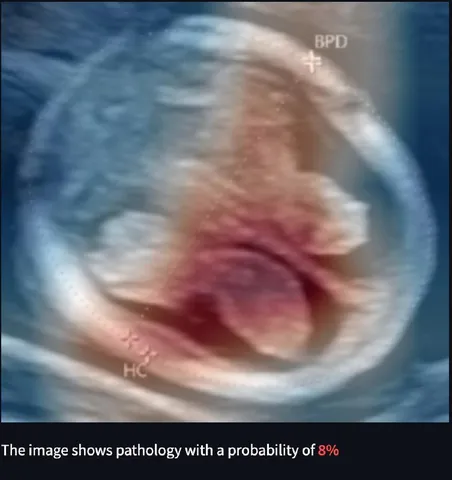
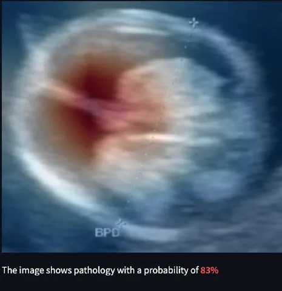

Разбираем интересный кейс из области медицины. В проекте по распознаванию редкой патологии spina bifida на УЗИ команда ML-инженеров из Школы анализа данных и Yandex Cloud приняла неожиданное решение. За неделю до релиза они полностью переписали пайплайн на MONAI — библиотеке для медицинского AI от NVIDIA. Дмитрий Сошников, выступивший ментором проектной команды, рассказал, почему стандартных инструментов PyTorch оказалось недостаточно, как MONAI упростила работу и какие модели команда планирует выложить в опенсорс.
Для обучения нейросети инженеры использовали датасет из 6 тысяч обезличенных УЗИ-снимков беременных женщин. Данные собрали и разметили специалисты НМИЦ имени Кулакова. Команда Yandex Cloud и студенты ШАДа построили архитектуру решения, включающую несколько нейросетей для поиска и классификации патологий. С помощью датасета студенты обучили модели и создали веб-интерфейс для врачей. Проект реализовали на платформе Yandex Cloud с использованием инструмента машинного обучения полного цикла Yandex DataSphere.
Выше можно сравнить два снимка (слева — без патологии, справа — с вероятностью патологии 83%) и получить представление о том, как сложно увидеть различия невооружённым глазом.
Изначально проект написали на «голом» PyTorch без специализированных медицинских библиотек. Пайплайн состоял из стандартных этапов:
— предобработки изображений;
— детекции области интереса с помощью нейросети YOLO;
— фильтрации снимков по качеству;
— поиска признаков патологии на хороших изображениях.
Подход работал, но оказался сложным для поддержки: разобраться в кастомных скриптах было непросто — особенно новым участникам команды или внешним специалистам. Поэтому когда стало ясно, что проект будет опубликован в опенсорсе и получит развитие, решили перейти на MONAI.
Переписывание всех частей пайплайна заняло неделю: сначала перенесли загрузку данных, затем — аугментации, потом — обучение и валидацию моделей. Особенно полезной оказалась аугментация для ухудшения качества снимков, которая имитировала реальные особенности УЗИ-аппаратов. Также пригодились готовые функции потерь для борьбы с дисбалансом классов и стандартные медицинские метрики. Кроме того, в MONAI есть встроенные инструменты интерпретации моделей, такие как Grad-CAM, что особенно важно для медицины: сегодня интерпретируемость моделей обязательна по этическим нормам.
Переход дал прирост сразу по нескольким направлениям. В первую очередь, улучшилось качество моделей — за счёт более разнообразных и реалистичных аугментаций. То же ухудшение изображений дало прирост точности на 2–3 процентных пункта. Также сократился объём кода и повысилась его читаемость: любые действия можно отследить через документацию MONAI, а не разбираться в кастомных скриптах.
Команда планирует выложить обученные модели в опенсорс в рамках MONAI Model Zoo — библиотеки предобученных моделей для медицины. Сейчас в разделе нет решений для ультразвука, и команда хочет закрыть этот пробел. Также разработчики готовят пайплайн для сбора новых данных, их разметки и дообучения моделей, чтобы специалисты НМИЦ Кулакова могли сами обновлять решение в будущем. Благодаря этому наработки можно будет использовать и в других медицинских задачах.
В заключение ещё раз напомним, что проект реализовывали выпускники ШАДа. Набор в Школу анализа данных Яндекса открыт до 5 мая. Если хочется своими руками создавать проекты, которые меняют индустрию и мир, — самое время подать заявку.
В подготовке поста участвовали: главный разработчик проекта Владимир Корсунов и руководитель проекта со стороны Yandex Cloud Евгений Попов.
ML Underhood
